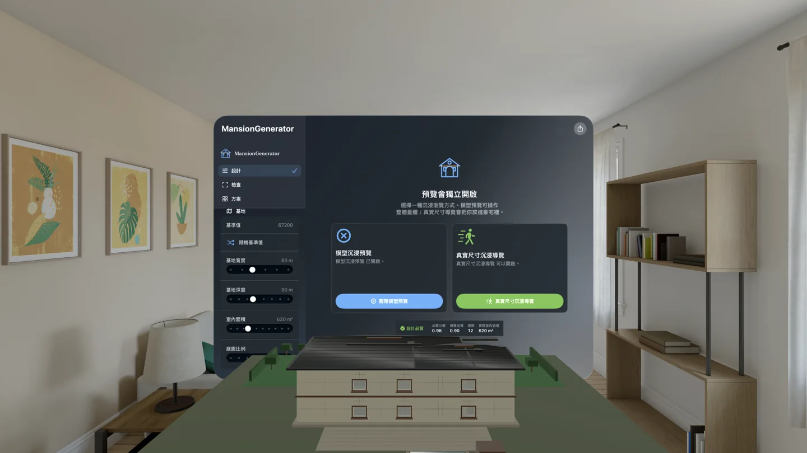

從一組條件，生成一座能繼續檢查與走進去看的豪宅。
MansionGenerator 把基地、面積、樓層、廳房衛、風格與 seed 轉成可重現的 3D 豪宅方案，並把平面圖、室內動線、保存比較與資產輸出放進同一個工作流程。
- 可用裝置
- iPhone / iPad / Mac / Apple Vision Pro
- 下載方式
- 付費下載

{kind=link}

基地 → 量體 → 房間 → 動線 → 資產
先定義設計條件，再生成可重現的方案。需要修改時，可以回到參數、保存版本或局部套用，而不是從頭重做。
先描述需求，再讓方案成形
設計從基地寬深、室內面積、庭園比例與樓層開始，再加入車庫數量、廳房衛需求、建築風格、平面形狀、屋頂、入口、採光與隱私比例。MansionGenerator 會先檢查條件是否合理，必要時依可用面積調整房間配置，再生成建築量體、室內空間與連通關係。
每次生成都有 seed。保留同一組 seed 與參數，就能再次得到相同設計；改動其中一項，則能觀察基地、房間或外觀如何跟著變化。
同時檢查平面、立體與動線
3D 預覽可以分別顯示屋頂、外牆、室內牆、樓板、天花、走廊、家具、照明、門窗與房間標籤，讓外觀與內部結構不必混在一起看。2D 平面圖則能依樓層檢視房間、走廊、牆線、門窗與連通資訊。
選定起點後，App 會沿著房間、走廊與樓梯建立室內路徑。品質提示會協助找出房間配置、面積使用與導覽動線中值得回頭調整的地方。
用基地、空間需求、建築語彙與 seed 生成設計。
切換 3D 圖層、查看 2D 平面，並檢查房間與樓層間的路徑。
保存方案、比較差異、局部套用參數，或輸出到下一個 3D 工作流程。
保存、比較與局部套用
喜歡的方案可以保存名稱與註記，依更新時間、名稱、面積或 seed 排序，也能以列表或平面縮圖瀏覽。比較模式會列出保存版本與目前設計的差異；需要延伸舊方案時，可以只套用基地、建築或廳房衛設定，也可以完整還原。
Apple 平台各自做擅長的事
iOS、macOS 與 visionOS 1.0 版本皆已通過審核並在 App Store 上架，讓同一套豪宅生成流程可以在不同 Apple 裝置上接續使用。
適合概念設計與空間原型
MansionGenerator 適合快速探索建築量體、房間組合、室內動線、空間介面與 3D 場景原型。生成結果是創作與概念視覺化素材，不是建築、結構、消防、法規或施工圖說；進入任何專業用途前，仍需要由合格專業人員檢查。
MansionGenerator 現已在 iPhone、iPad、Mac 與 Apple Vision Pro 上架。從快速生成、深入整理到沉浸式檢視，都能在適合的裝置上繼續同一個空間概念。
Turn a set of constraints into a mansion you can inspect and step inside.
MansionGenerator turns a site, area, floors, room program, style, and seed into a repeatable 3D mansion concept, then keeps plan inspection, interior routes, saved comparisons, and asset export in one workflow.
- Devices
- iPhone / iPad / Mac / Apple Vision Pro
- Download
- Paid download

{kind=link}
Site → Massing → Rooms → Routes → Assets
Define the design conditions first, then generate a repeatable result. When the concept changes, return to its parameters, saved versions, or partial presets instead of starting over.
Describe the requirements, then shape the concept
A design begins with site width and depth, indoor area, garden ratio, and floor count. It can then include garage capacity, living rooms, bedrooms, bathrooms, architectural style, footprint, roof, entrance, glazing, and privacy. MansionGenerator checks the constraints, adjusts the room program when usable area requires it, and generates the building mass, interior spaces, and their connections.
Every generation includes a seed. Keep the same seed and parameters to rebuild the same design, or change one condition to see how the site, rooms, and exterior respond.
Inspect plans, volumes, and routes together
The 3D preview can independently show roofs, exterior and interior walls, floors, ceilings, corridors, furniture, lighting, doors, windows, and room labels, making the interior structure easier to read. The 2D plan can review rooms, corridors, walls, openings, and connections one floor at a time.
After choosing a starting point, the app builds an interior route through rooms, corridors, and stairs. Quality guidance highlights room layout, area use, and navigation issues that may be worth adjusting.
Use site dimensions, room needs, architectural language, and a seed to create a design.
Toggle 3D layers, read the 2D plan, and review routes between rooms and floors.
Save versions, compare differences, apply part of an earlier design, or export into another 3D workflow.
Save, compare, and apply selected parts
Useful designs can be saved with names and notes, sorted by update time, name, area, or seed, and browsed as a list or plan thumbnails. Comparison mode shows differences between a saved version and the current design. When extending an earlier concept, users can apply only its site, building, or room-program settings, or restore the full design.
Let each Apple platform do what it does best
The iOS, macOS, and visionOS 1.0 versions have passed review and are now available on the App Store, extending the same mansion-generation workflow across Apple devices.
For concept design and spatial prototyping
MansionGenerator is intended for exploring building massing, room combinations, interior routes, spatial interfaces, and 3D scene prototypes. Generated results are creative and concept-visualization materials, not architectural, structural, fire-safety, code-compliance, or construction documents. Qualified professionals must review any professional use.
MansionGenerator is now available on iPhone, iPad, Mac, and Apple Vision Pro. Move from quick generation to deeper organization and immersive inspection on the device that fits each part of the workflow.